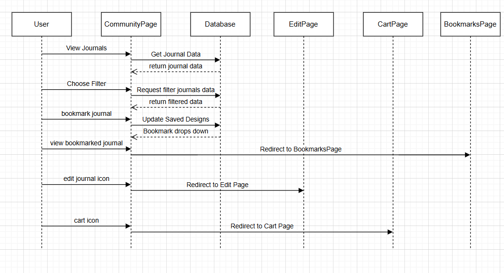
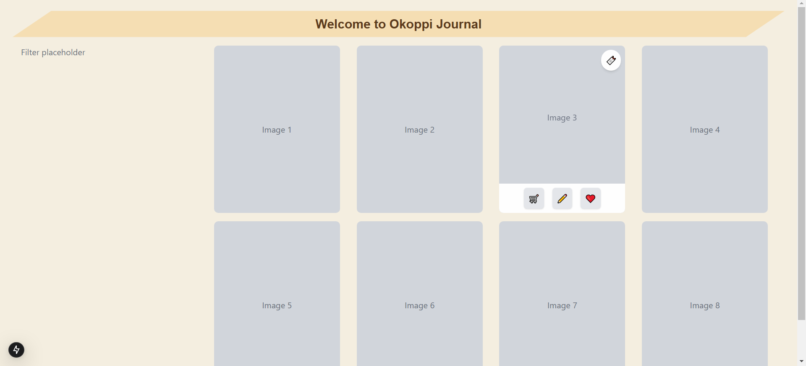
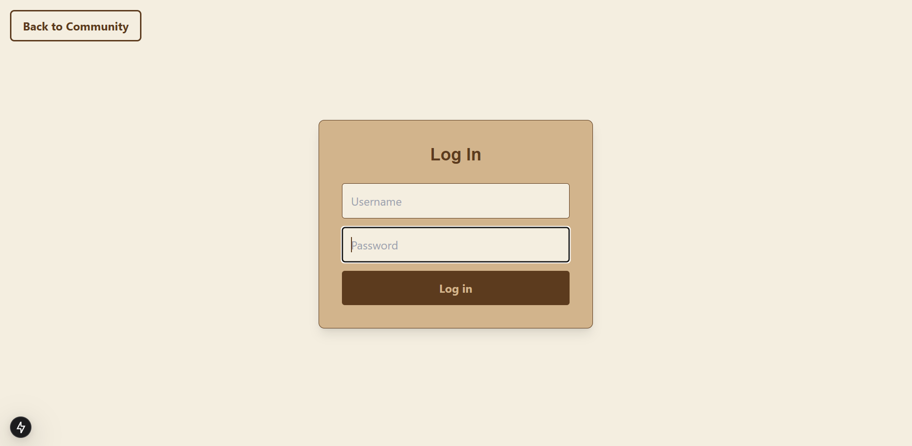
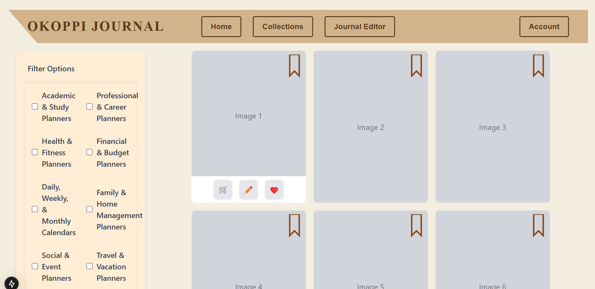

Meet the Team:
Team 9
Team Lead: Bridget May
Front End: Erin Bokausek, and Paras Rajan
Backend/Database: Carola Gonzalez Lebron
Month 1
Design Overview
 Over the past month, our team has focused on laying the foundation for its community page—a space where users can explore, edit, save, and purchase bullet journal designs. This phase involved extensive conceptualization, collaboration with the client, and overcoming technical challenges as the team adapted to a new tech stack, including React, Next.js, MongoDB, Vercel, Tailwind CSS, and Shadcn. A key milestone was finalizing the design direction, incorporating journal previews, interactive buttons, hoverable elements, a navigation bar, a simple filter, and a bookmark animation. The homepage was successfully developed with core components like journal previews, filtering, and navigation, setting the stage for the next development phase.
Month 2
Progress:
 Our team has made significant progress in developing the community page...
Month 3
Progress:


Our team has made significant progress in developing the community page for the bullet journal platform, focusing on both design and functionality. We refined the website’s appearance using CSS, ensuring a smooth and cohesive design across different devices by adjusting layouts and switching from a grid-based journal display to flexboxes. In parallel, we have been setting up a MongoDB database, a crucial step for properly displaying journals and enabling future button functionality. Initially uncertain about including user data in the database, we ultimately decided it was essential for the platform’s functionality. Other key achievements include implementing basic button redirects, developing login and logout pages, and working on authentication for secure user access. Collaboration with the Engineering (EGR) team was essential in aligning our website with their journal customizer and point of sale system, though it presented challenges that were overcome through clear communication. Looking ahead, our focus will be on refining existing features, displaying journal thumbnails, and creating an account page where users can manage their saved and created journals.